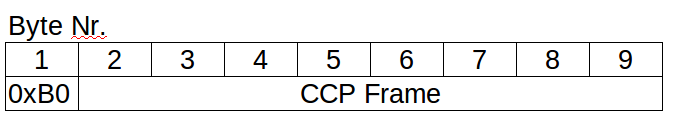

Kommunikation
Grundlagen
Grundsätzlich sendet der CCP Treiber auf dem µC keine Informationen wenn er nicht vorher gefragt wurde. Werden aber vom CCP-Master
(Labskaus) Anfragen an den µC gesendet so antwortet dieser mit einem entsprechenden CCP-Frame der immer aus 8 Byte besteht. Die
Botschaften die über des CCP-Protokoll ausgetauscht werden beinhalten z. B.
- Anfrage zum Beginnen eine CCP Kommunikation
- Auslesen einer Variable
- Setzen einer Variable
Eine Liste aller Befehle welche über CCP ausgetauscht werden kann hier eingesehen werden.
Kommunikation aus Sicht des Programms Labskaus
Wird eine Messung gestartet so öffnet Labskaus einen seriellen Port. Dieser ist hart im Programm
einkodiert (/dev/ttyUSB0). Dieser Port wird mit den folgenden Eigenschaften geöffnet:
- 115200 bps
- kein paritybit
- 1 Stopbit
- 8 Datenbits
Senden von CCP-Botschaften
Jede Anfrage die von Labskaus an den µC gesendet wird hat die gleiche Form. Sie besteht jeweils aus
aus 8 Byte und einem Startzeichen (hex: 0xB0). Nach dem Startzeichen folgen die 8 Byte in welchen
die verschiedenen Anfragen codiert.

Das zustäzliche Startzeichen muss bei der Implementierung auf dem µC berücksichtigt da der CCP-Treiber nur
die 8 Byte der CCP-Botschaft benötigt. Auf dieses wird hier jedoch nicht weiter eingegangen da die Labskaushilfe
keine Implementierungshinweise für den µC enthalten soll.
Empfangen von CCP-Botschaften
Was fürs Senden gilt gilt auch für das Empfangen. Das heißt das jede CCP-Botschaft die vom µC gesendet wird das
Byte mit dem Wert 0xB0 als Startzeichen haben muss. Alle CCP-Botschaften die Empfangen werden landen in einem
Bufferspeicher der alle 10ms analysiert wird.
Die Analyse des Speichers durchläuft die folgenden Phasen:
- Lösche alle Daten des Bufferspeichers bis auf das erste Startzeichen (0xB0).
- Analysiere ob der Speicher mehr als 8 Byte enthält. Wenn dieses der Fall ist dann befindet sich im
Speicher mindestens eine CCP-Botschaft (Startzeichen + 8Byte).
- Wenn eine komplette CCP-Botschaft im Speicher ist, dann wird diese weiter zur dekodierung geschickt
und gleichzeitig aus dem Pufferspeicher entfernt.